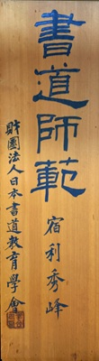
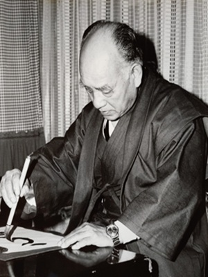
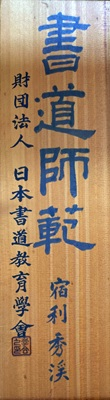
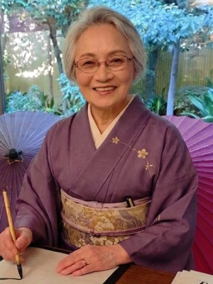
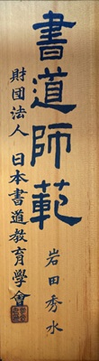
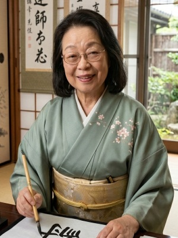

宿利 秀峰
毛筆基礎・礼法担当
初学者の不安を減らし、基礎を丁寧に積み上げる指導を行います。
Masters
指導方針と得意分野を明確にし、安心して学べる選択を支えます。


毛筆基礎・礼法担当
初学者の不安を減らし、基礎を丁寧に積み上げる指導を行います。


実用書・ペン字担当
生活や仕事の中で成果を実感できる実用的な学習を重視します。


資格取得・検定対策担当
段級位取得までの計画設計と、継続しやすい学習サイクルを提供します。